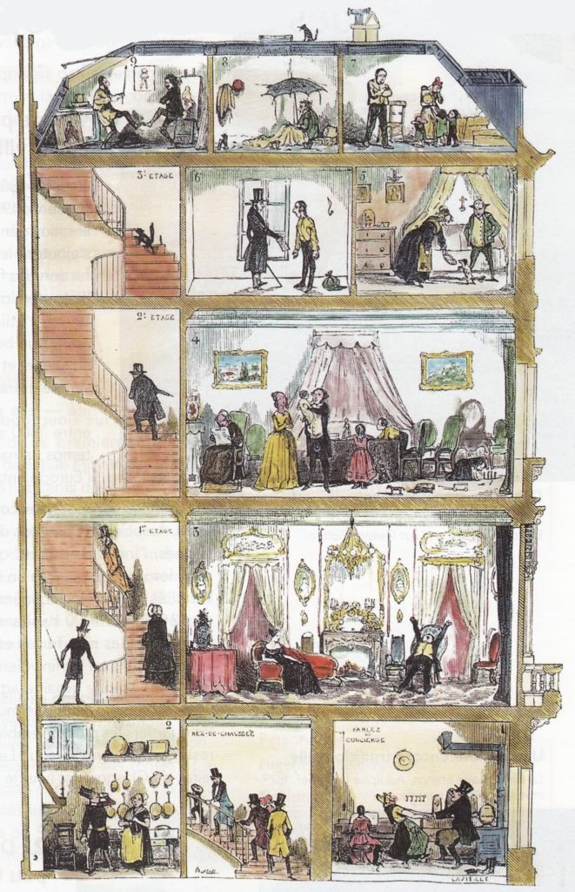

Écouter · Niveau B1 · Vidéo 2
Qui habitait à quel étage ?
Une courte vidéo (1 min 10) sur l'immeuble parisien. La vidéo confirme-t-elle ce que montre la gravure ?
1. La gravure

Rappel : d'après la gravure, qui habite au rez-de-chaussée ? Au premier étage ? Sous les toits ? Notez vos réponses : la vidéo va-t-elle les confirmer ?
2. Écouter
La vidéo ne s'affiche pas ? Choisissez le fichier logements-paris.mp4 sur votre appareil :
Gardez les sous-titres masqués et ne mettez pas la vidéo en plein écran. La vidéo s'arrête au milieu d'une phrase : c'est normal.
Écoute 1 · L'essentiel
Écoute 2 · Qui habitait où ?
3. La gravure et la vidéo
Regardez de nouveau la gravure (1845) et pensez à la vidéo.
Transcription
Afficher la transcription (après les activités)
60 % des logements à Paris ressemblent à cet immeuble, et il vous dit sûrement quelque chose. Déjà, c'est un immeuble en pierre de taille. Sa façade est souvent richement décorée, et la hauteur doit être proportionnelle à la largeur de la rue, mais ne doit jamais dépasser six étages.
Mais saviez-vous qu'à une époque pas si lointaine que ça, une hiérarchie sociale existait dans ces immeubles ?
Commençons par le rez-de-chaussée, qui était initialement destiné au commerce. Le premier étage, appelé l'entresol, était utilisé comme entrepôt pour les boutiques du rez-de-chaussée, ou bien pour loger le concierge. Le deuxième étage, avec une hauteur sous plafond plus importante, des fenêtres généralement décorées et un long balcon filant, était réservé aux ménages les plus riches, les nobles. Les étages intermédiaires, troisième et quatrième, sans balcon, étaient destinés à la petite bourgeoisie. Le cinquième étage, également flanqué d'un long balcon, mais uniquement à des fins décoratives afin d'améliorer l'équilibre de la façade, était l'étage des plus modestes. Et enfin, le sixième et dernier étage, sous les combles, où l'on retrouve les chambres de bonne, était habité par les domestiques ou les étudiants.
Vous l'aurez bien sûr compris, on vous parlait de l'immeuble haussmannien, joyau de la ville de Paris et admiré par des millions de touristes chaque année. Et c'est pour cette raison que…
Gravure : Lavieille d'après Bertall, Le Diable à Paris et L'Illustration, 1845 (domaine public). Transcription établie à partir des sous-titres de la vidéo. Utilisation pédagogique en classe.